CS184/284A Spring 2025 Homework 3 Write-Up
Names: Ethan Zhang and Ray Zhang
Link to webpage:
cal-cs184-student.github.io/hw-webpages-sendhelp2/hw3/
Link to GitHub repository:
github.com/cal-cs184-student/hw-webpages-sendhelp2
Overview
For this homework, we built upon a basic rendering engine by implementing ray generation / intersection, direct
illumination, and global illumination. Along the way, we also optimized a lot of the path/ray tracing computations
by creating a Bounding Volume Hierarchy, adding russian roulette sampling, and adaptive sampling. In the end, we are
able to create images from a virtual scene where a camera tries to capture light bouncing from various objects in a
scene according to mathematical estimates. In addition, we brought in some of our knowledge from previous homeworks
to find object intersections and general spatial awareness in terms of the world / camera coordinates.
All in all, we learned a lot about the reasoning behind optimizations and found a lot of fun doing the renders to
see the color and scene come to life from the previous flat renders. (I also found it really cool how optimizations
can speed up renders by several magnitudes).
Part 1: Ray Generation and Scene Intersection
A walk through of the ray generation and primitive intersection parts of the rendering pipeline
To start building our path tracer, we needed to first generate the rays that we will cast out towards the scene
from the prospective of the camera. In particular, we want to somewhat model the pin-hole idea by having an origin
where rays are casted out of. Then, we can determine which point on the camera sensor we want the rays to hit (in
other words, we created the ray in camera space first). Since we have objects described in the scene space, we
further used the
c2w matrix to transform the ray into world space.
Now that we have the ray, we need to cast it out multiple times into the scene (from slightly different points on
the target pixel for sampling purposes). For each ray, we then need to check if it intersect any objects in the
scene and, if so, we estimate the illuminance that the object is currently receiving (and thus will reflect back
to the camera via the bsdf estimator).
Our triangle intersection algorithm
In order to reuse our point-in-triangle test from homework 1, we needed to first convert the problem to something
we were familiar with. Specifically, we needed to find where the point would be on the triangle, and more
importantly, project the 3D triangle down to the 2D space. To do this, we decided to use the ray intersection with
plane equation (in which the normal was the cross product of two triangle vertices) to determine the time, t, at
which the ray would intersect the triangle. Now that we have the point in 3D space, we proceed to project all 4
points (+ triangle vertices) to an arbitrary plane. With all the points on the same plane, we reused the 3 line
tests from hw1 to test whether the projected plane-intersection points fall with-in the triangle.
Lastly, we used barycentric coordinates from the same homework to somewhat average out the vertex normals to return
the final intersection normal.
Images with normal shading for a few small .dae files:
 banana.dae
banana.dae
|
 CBcoil.dae
CBcoil.dae
|
|
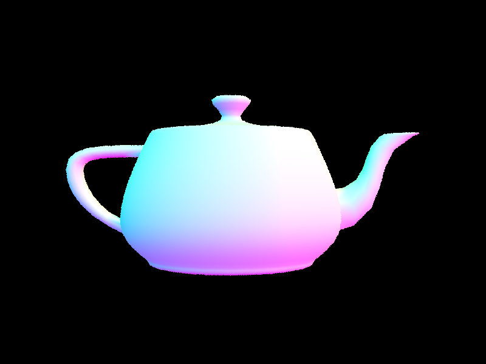
teapot.dae
|
 CBspheres_lambertian.dae
CBspheres_lambertian.dae
|
Part 2: Bounding Volume Hierarchy
BVH construction algorithm walk through & heuristics
Since the idea of BVH is to construct somewhat of a 3D binary tree, we thought it made the most sense to split each
large bounding volume into two halves with roughly equal probability of a light ray hitting it. To estimate this, we
picked the splitting heuristic of the average of primitives' centroids. Specifically, we also measured the extent
of the overall bounding volume for the considered primitives first to find the axis which had the most spread. After
a small adjustment to give less weight to the Z-axis (since we reasoned that light rays will likely traverse both
halves), we split the primitives by their centroids on the chosen axis against the average.
Once we figured out the splitting scheme, the construction was quite simple: find the average centroid, pick axis
to split, split by the primitives' centroids into two child nodes, and recurse. Then, to quickly find ray
intersections, it was easy to start from the root node, then for the given node, we see if the ray hits and only
if it hits, we consider the primitives if its a leaf node, otherwise the left and right children nodes, and recurse.
Large .dae files that could only be rendered in reasonable time with BVH acceleration:
|
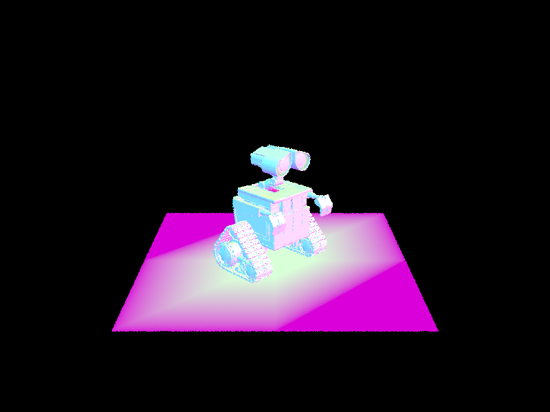
walle.dae (240326 primitives)
|
 building.dae (39506 primitives)
building.dae (39506 primitives)
|
 bunny.dae (33696 primitives)
bunny.dae (33696 primitives)
|
Rendering times on a few scenes with moderately complex geometries with and without BVH acceleration
PathTracer Output
Part 2: BEFORE
[PathTracer] Input scene file: ../dae/meshedit/beetle.dae
[PathTracer] Rendering... 100%! (65.9512s)
BVH traced 480000 rays.
Building BVH from 7558 primitives
Average speed 0.0073 million rays per second
[PathTracer] Averaged 7558.000000 intersection tests per ray.
[PathTracer] Input scene file: ../dae/sky/CBcoil.dae
Building BVH from 7884 primitives... Done! (0.0000 sec)
54.2154s
[PathTracer] BVH traced 480000 rays.
[PathTracer] Average speed 0.0089 million rays per second.
[PathTracer] Averaged 7884.000000 intersection tests per ray.
[PathTracer] Input scene file: ../dae/sky/bunny.dae
[PathTracer] Building BVH from 33696 primitives... Done! (0.0007 sec)
[PathTracer] Rendering... 100%! (454.1831s)
[PathTracer] BVH traced 480000 rays.
[PathTracer] Average speed 0.0011 million rays per second.
[PathTracer] Averaged 33696.000000 intersection tests per ray.
Part 2: AFTER
[PathTracer] Input scene file: ../dae/meshedit/beetle.dae
[PathTracer] Building BVH from 7558 primitives... Done! (0.0050 sec)
[PathTracer] Rendering... 100%! (0.0753s)
[PathTracer] BVH traced 480000 rays.
[PathTracer] Average speed 6.3714 million rays per second.
[PathTracer] Averaged 1.474331 intersection tests per ray.
[PathTracer] Input scene file: ../dae/sky/CBcoil.dae
[PathTracer] Building BVH from 7884 primitives... Done! (0.0067 sec)
[PathTracer] Rendering... 100%! (0.0883s)
[PathTracer] BVH traced 480000 rays.
[PathTracer] Average speed 5.4352 million rays per second.
[PathTracer] Averaged 1.949583 intersection tests per ray.
[PathTracer] Input scene file: ../dae/sky/bunny.dae
[PathTracer] Building BVH from 33696 primitives... Done! (0.0292 sec)
[PathTracer] Rendering... 100%! (0.1113s)
[PathTracer] BVH traced 480000 rays.
[PathTracer] Average speed 4.3119 million rays per second.
[PathTracer] Averaged 2.595469 intersection tests per ray.
BVH speeds up the rendering of complex scenes by several magnitudes, and noticeably improves performance even at
smaller scales. For testing, we tried to render three different scenes: beetle, CBcoil, and bunny. For
beetle.dae, a moderately small scene with 7,558 primitives, the improvement was already apparent with
BVH acceleration taking only 0.0753 seconds to render in contrast to 65.9512s without it. This improvement is even
more significant in a large scene like
bunny.dae with 33,696 primitives reducing the time from 7
minutes to just 0.1113 seconds. In order to understand why this happens, we take a look at the average
intersection tests per ray. For
bunny.dae, without BVH acceleration, we see 33,696 intersection tests,
one for each primitive in the scene whilst BVH reduces this to just 2.59 intersection tests. The previous tests
are clearly inefficient since the light ray could only reasonably hit a certain area in the scene so the BVH reduces
a lot of inefficient tests. In addition, in scenes with less occlusions (from camera's prospective) like
beetle.dae, we get even more performance than roughly same sized
CBcoil since it is more
likely for a ray to terminate before hitting another bounding box.
Part 3: Direct Illumination
Direct lighting implementations walk through
In order to render images with realistic shading, we implement two different lighting estimators: hemispherical
sampling and importance sampling. With both sampling, we still cast out rays for each pixel of the final image.
However, the difference lies in the handling of light intersecting with objects in the scene. For uniform
hemispherical sampling, we sample
l random directions from essentially a half-dome shape around the
normal of the surface at the intersection point. Then, we do a "shadow" ray trace from this direction to get
the average reflectance at that intersection point. Even though our results already looked pretty realistic, the
major limitation is that it was very noisy with many bounce samples never reaching a light source.
To reduce the likelihood of bounces never reaching light, we implemented importance sampling of lights where, in
bounces, we strictly sample from the solid angle covering each light. To do this, we iterate through each light
present in the scene and get samples of angles that would hit the light (along with the pdf which tells us how
likely it was to sample this angle). In this way, the samples converged a lot quickly and the image became a lot
less noisy.
Some images rendered with both implementations of the direct lighting function
For some scenes, the objects use a different bsdf than implemented which causes it to become dark in some renders
but the effects of its shadow still showcases the difference between importance and hemispherical sampling.
CBbunny.dae (importance sampling)
|
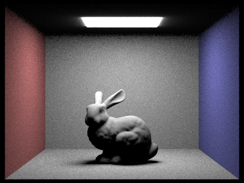
CBbunny.dae (uniform hemisphere sampling)
|
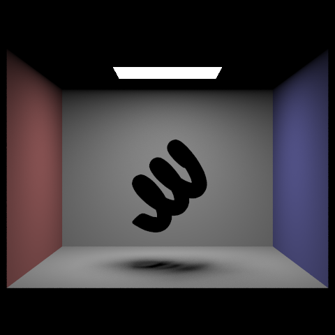
CBcoil.dae (importance sampling)
|
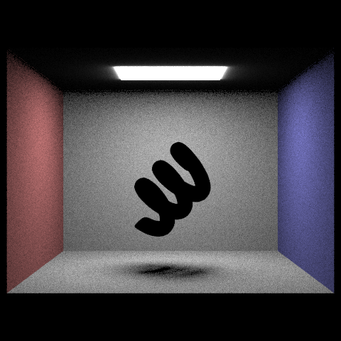
CBcoil.dae (uniform hemisphere sampling)
|
 CBdragon.dae (importance sampling)
CBdragon.dae (importance sampling)
|
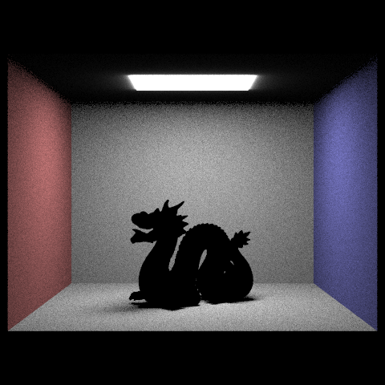
CBdragon.dae (uniform hemisphere sampling)
|
Area light with different amounts of sampled light rays
Focusing on the CB spheres (with lambertian bsdf) scene since it had at least one area light. We rendered it with 1,
4, 16, and 64 light rays (the -l flag) and with 1 sample per pixel (the -s flag) using light sampling. In terms of
noise levels in the soft shadow, it seemed to decrease quickly with the amount of lights ray that we used to sample.
I believe this is due to the occlusion of the spheres being slightly included/not depending on the sampled location
on the pixel for raytracing:
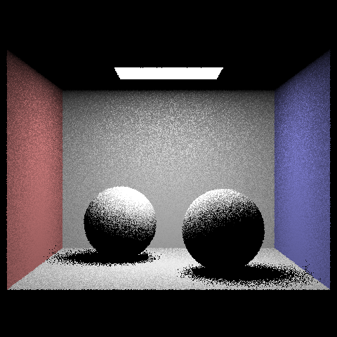
CBspheres_lambertian.dae (1 light ray)
|
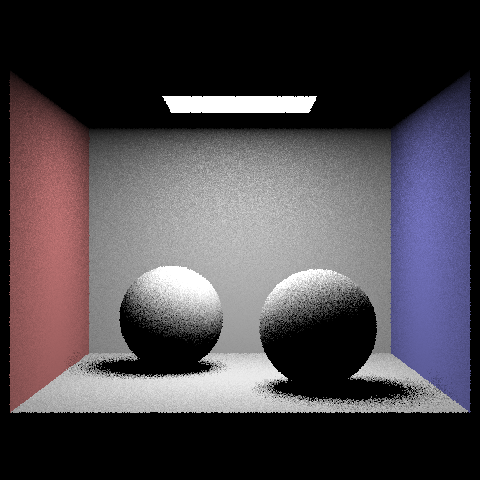
CBspheres_lambertian.dae (4 light rays)
|
|
CBspheres_lambertian.dae (16 light rays)
|
CBspheres_lambertian.dae (64 light rays)
|
Uniform hemisphere sampling vs. importance lighting sampling
In the above results, it is clear that in the same amount of light samples, importance light sampling resulted
in a much less noisy image--indicating that it has found an estimate of the lighting values at certain parts on
the scene faster than uniform hemispherical sampling. However, this is only achieved by biasing and restricting
the sample to just the lighting sources which is possible because we can give a good description to the distribution
representing angles that could hit the light. In contrast, uniform hemisphere sampling with enough sampling would
accurately reconstruct an unbiased result. As seen though, even with 64+ light samples, the hemispherical sampling
was still very noisy and it is clear that some samples have hit the light source while others haven't even though
they are both in areas not occluded by the sphere. I can also imagine if a scene has a lot of lights and
partitions, it might not be practical to go through every light and some sort of spatial hashing might be necessary.
Lastly, uniform hemisphere sampling may also never capture the light emission from a point source since the solid
angle for such light would practically be zero.
Part 4: Global Illumination
Indirect lighting function walk through
With just one bounce lighting, our shadows were quite harsh and it didn't make sense for the ceiling to be pitch
dark. In order to implement 1+ bounces for ray tracing, it was first necessary to implement a way to sample an
input direction and output another direction representing the additional bounces between a light source and the
camera. Then, we could begin to accumulate the all the light along a path up to a certain depth. For most testing,
we chose a depth of 5 and how it works is we get the light emission like previous part at the last depth. Then, we
kind of trace backwards to find the light reflectance given each surfaces' bsdf and divided by the pdf corresponding
to the probability of that sample. Lastly, we add up all the contributions from each depth to get the final
radiance estimate. In order to estimate how much radiance would be provided given bounce lighting of infinite depth,
we implemented russian roulette global illumination where at each depth, we used
p_rr_terminate = 0.35
to determine whether to stop early. If it is an early stop, we could multiply by the continuity probability to get
a rough estimate of what it would look like if it continued further.
Some images rendered with global (direct and indirect) illumination, using 1024 samples per pixel
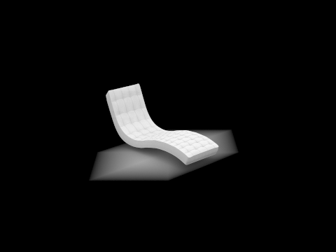
bench.dae
|
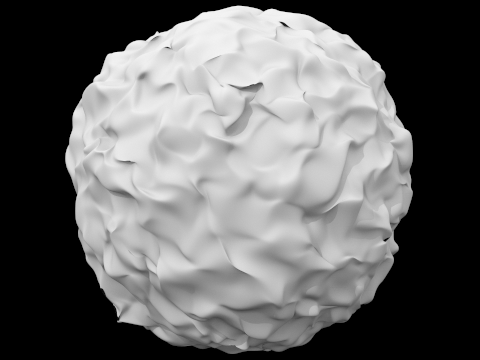
blob.dae
|
|
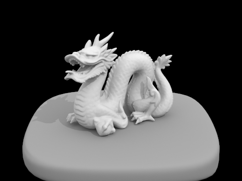
dragon.dae
|
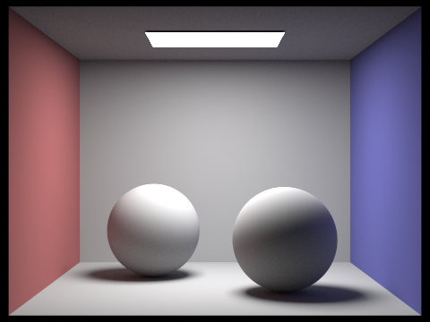
CBSpheres.dae
|
Bunny.dae with only direct illumination / only indirect illumination, using
1024 samples per pixel
|
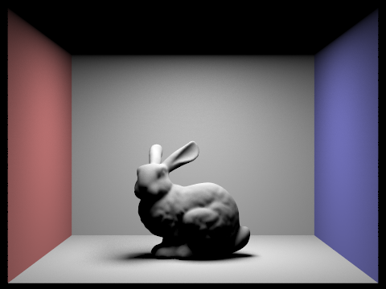
bunny.dae (direct illumination)
|
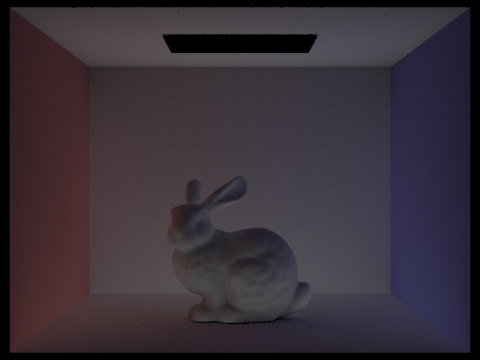
bunny.dae (indirect illumination)
|
CBbunny.dae with mth bounce of light, having max_ray_depth set to 0, 1, 2, 3, 4, and 5 (the -m flag),
with and without isAccumBounces=false.
In the 2nd and 3rd bounce of light, it seems to add in a lot of the color information from the two side walls,
filling in the floors and the side of the bunnies with color. This contributes significantly to the realism and
quality of the image since it makes sense that the bunny would kind of absorb some of the color from the walls.
In addition, the shadow under the bunny becomes a lot less intense from these additional bouncing of light
and the corners also became less dark with more bounced lights. It was also really cool to see the ceiling be filled
up with light bounced from the scene since before it was just completely dark.
isAccumBounces=false
|
|
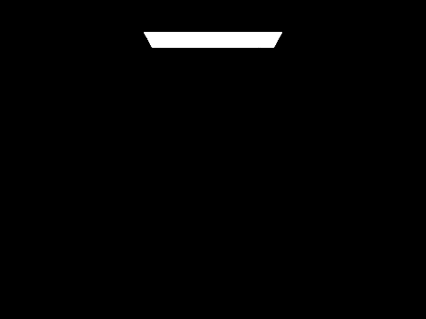
0th bounce
|
1st bounce
|
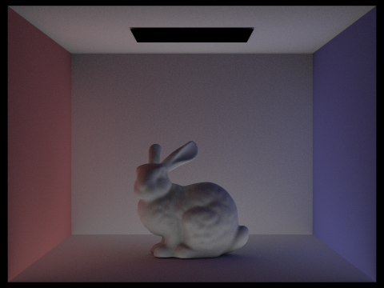
2nd bounce
|
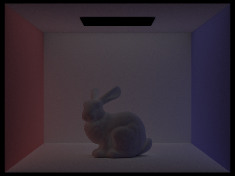
3rd bounce
|
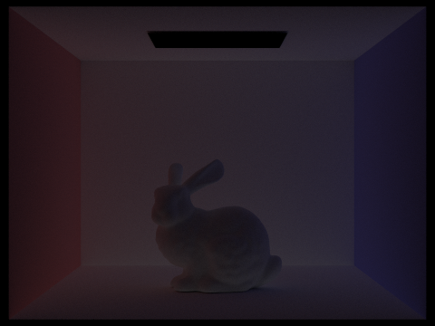
4th bounce
|
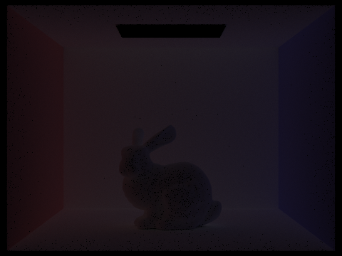
5th bounce
|
isAccumBounces=true
|
|
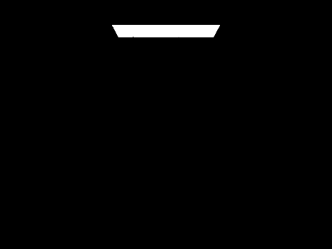
0th bounce
|
..1st bounce
|
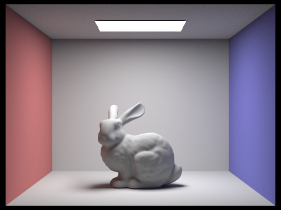
..2nd bounce
|
..3rd bounce
|
..4th bounce
|
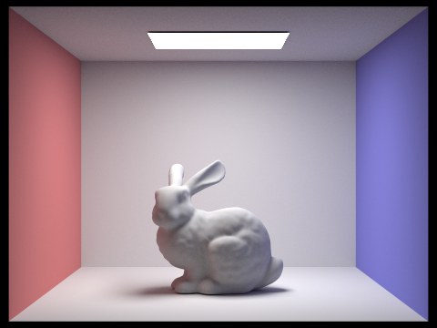
..5th bounce
|
Russian Roulette rendering for CBbunny.dae with max_ray_depth set to 0, 1, 2, 3, 4, and 100(the -m
flag), using 1024 samples per pixel
|
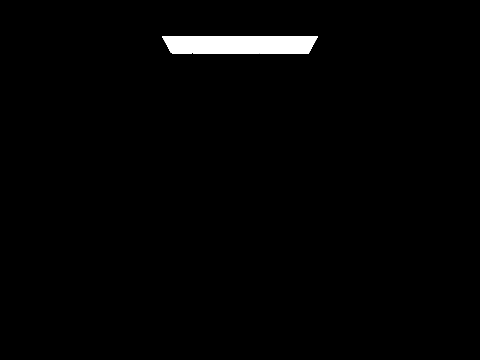
depth: 0
|
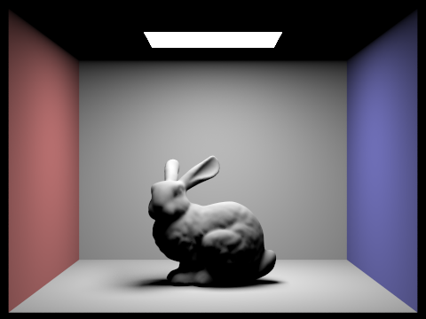
depth: 1
|
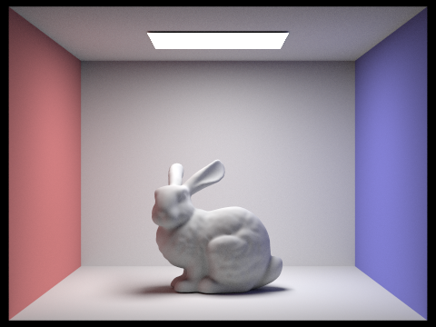
depth: 2
|
depth: 3
|
 depth: 4
depth: 4
|
depth: 100
|
Rendered wall-e.dae views with various sample-per-pixel rates, including 1, 2, 4, 8, 16,
64, and 1024, using 4 light rays
In the following renders, we see that, with more sample-per-pixel, we get a lot less noise on the surface of the
object. Lighting-wise, it seems like the softness of the shadows don't change much.
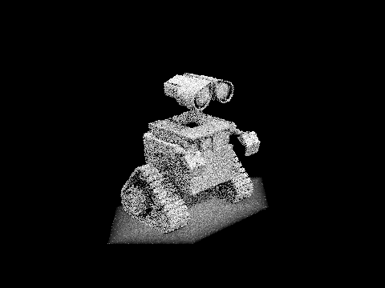
1 sample-per-pixel
|
2 sample-per-pixel
|
4 sample-per-pixel
|
8 sample-per-pixel
|
16 sample-per-pixel
|
64 sample-per-pixel
|
|
1024 sample-per-pixel
|
Part 5: Adaptive Sampling
Adaptive sampling walk through
While rendering the scene, it became clear that some regions of the scene were not that complicated. Flat areas
like the wall often only bounced towards the light and there were not many other elements that would interact with
it. In this sense, most of the samples from bounces would return similar values and became redundant. To estimate
this redundancy, we looked at the variance of the distribution of the sample illuminances every so often. With the
variance of the distribution and the number of samples, we estimate
I = 1.96 ⋅ σ / sqrt(n) as the unit of
convergence for that pixel. Every
samplesPerBatch, we would then check if this
I would
get above a certain value based on the mean * maxTolerance, representing the 95% confidence interval.
If it has, then we can stop sampling for that pixel.
Bench.dae and dragon.dae rendered with adaptive sampling
Below, we show
bench.dae and
dragon.dae rendered at 2048 samples-per-pixels, 1 sample
per light, and m = 6. For both renders, it is clear that in regions close to complex curves and creases, the
adaptive sampling rate is much higher. This makes intuitive sense since there are a lot more close-by surface in
which light can be scattered, depending on the sampling location, it could very well include or not include
contributions from these surfaces. Thus, it would take longer to converge. In contrast, the flat surfaces further
from edges had "green" sampling rate which makes sense since it is not very affected by surroundings and each sample
probably is around the same.
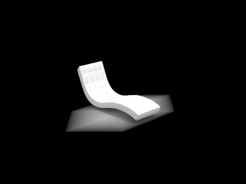
bench.dae (noise-free rendered result)
|
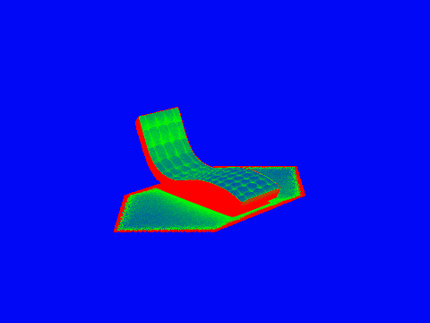
bench.dae (sample rate image)
|
|
dragon.dae (noise-free rendered result)
|
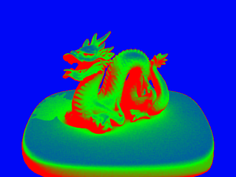
dragon.dae (sample rate image)
|